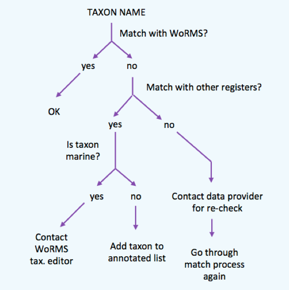

4.1.1 Name Matching Strategy for taxonomic quality control
Three authoritative taxonomic lists are currently used in OBIS: the World Register of Marine Species (WoRMS), the Integrated Taxonomic Information System (ITIS), and the Catalogue of Life (CoL). The Interim Register of Marine and Nonmarine Genera (IRMNG) is used to distinguish marine from freshwater species.
The OBIS node managers agreed to match all the scientific names in their datasets according to the following Name Matching workflow.

4.1.1.1 Step 1: Match with WoRMS
The taxon match tool of the World Register of Marine Species (WoRMS) is available at http://www.marinespecies.org/aphia.php?p=match. The WoRMS taxon match will compare your taxon list to the taxa available in WoRMS.
This taxon match takes into account exact matches and fuzzy matches, the latter being possible spelling variations of a name available in WoRMS. WoRMS also identifies ambiguous matches, indicating that several matching options are available. The user can check these ambiguous matches and select the correct one, based on e.g. the general group information (a sponge dataset) or the authority. If this would be impossible with the available information (e.g. missing authority or very diverse dataset), then you need to contact the data provider for clarification.
For performance reasons, the limit is set to 5,000 rows. Larger files can be sent to info@marinespecies.org and will be returned as quickly as possible.
After matching, the tool will return you a file with the AphiaIDs, LSIDs, valid names, authorities, classification and any other output you have selected.
The WoRMS LSID is used for DwC:scientificNameID.
A complete online manual is available at http://www.marinespecies.org/tutorial/taxonmatch.php.
4.1.1.2 Step 2: Match with other registers
The LifeWatch taxon match compares your taxon list to multiple taxonomic standards. Matching with multiple registers gives an indication of the correct spelling of a name, regardless of its environment. If a name would not appear in any of the registers, this could indicate a mistake in the scientific name and the name should go back to the provider for additional checking/verification.
Contrary to the WoRMS taxon match, when several matching options are available, the LifeWatch taxon match only mentions “no exact match found, multiple possibilities” instead of listing the available options. If multiple options are available, these should be looked up and matched manually.
Currently, this web service matches the scientific names with the following taxonomic registers:
- World Register of Marine Species – WoRMS
- Catalogue of Life – CoL
- Integrated Taxonomic Information System – ITIS
- Pan-European Species-directories Infrastructure – PESI
- Index Fungorum – IF
- International Plant Names Index – IPNI
- Global Names Index - GNI
- Paleobiology Database - PaleoDB
4.1.1.3 Step 3: Is taxon marine?
The Interim Register of Marine and Non-marine Genera (IRMNG) matching services are available through http://www.irmng.org/, as well as through the LifeWatch taxon match.